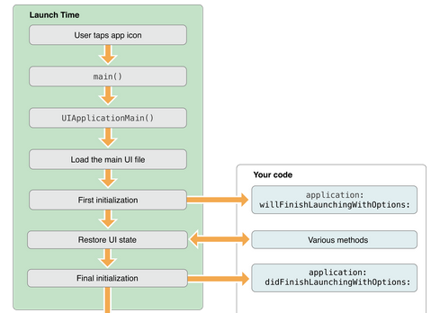

Author: Charles Zhu
Summary: launch screen,xcode6,git
xcode6工程在iOS7下未全屏
使用xcode6创建的工程在iOS7下运行，居然出现了未全屏的现象，仿佛一下子回到了iPhone5发布的时代。因为提交了多次，不清楚是哪次引入的问题。所幸使用了git管理版本，想找到出错的提交，就靠git了。
git bisect
在不知道bisect之前，我能想到的办法是通过 reset hard 或者archive “恢复”到逐个提交，然后运行看结果。可是强大的git提供了bisect，于是一切都好办了。
bisect的使用就是标记两个版本，一个正确一个错误，然后git会自动找中间某个提交，由用户来确认是正确还是错误。如此反复，就能定位到引入错误的提交，具体执行过程演示如下：
git log --oneline //列出提交记录
git bisect start //开始查找
git bisect bad //标记当前（master）为错误版本
git bisect good A-commit //提供一个运行正确的版本，下面开始查找
git bisect reset //当确认错误的提交后，需要清理战场，回到HEAD
LaunchScreen.xib
经过bisect的检查，发现是将工程的 Deployment target设置为iOS7引起的。因为Xcode6中模板工程默认使用LaunchScreen.xib，而且size class是对iOS8才有效，所以猜想应该是LaunchScreen引起的。重新运行了下工程，发现在iOS7下的确启动画面没有显示。而目前iOS7的用户还是占了大多数，很显然不可能只适配iOS8，所以工程还是得使用LaunchImage。
启用LaunchImage
启用很简单，在target的general设置中找到 App Icons and Launch Images， 然后点击 Use Asset Catalog，接下来按提示操作就可以了。
就目前的测试和google搜索情况来看，这种iOS7的不全屏显示问题只能通过这种方式解决。从app的launch过程（下图）可以看出，启动图片的加载是在Load the main UI file进行的，此时还无法通过代码和程序进行“交互”。

(图片来自 App Programming Guide)